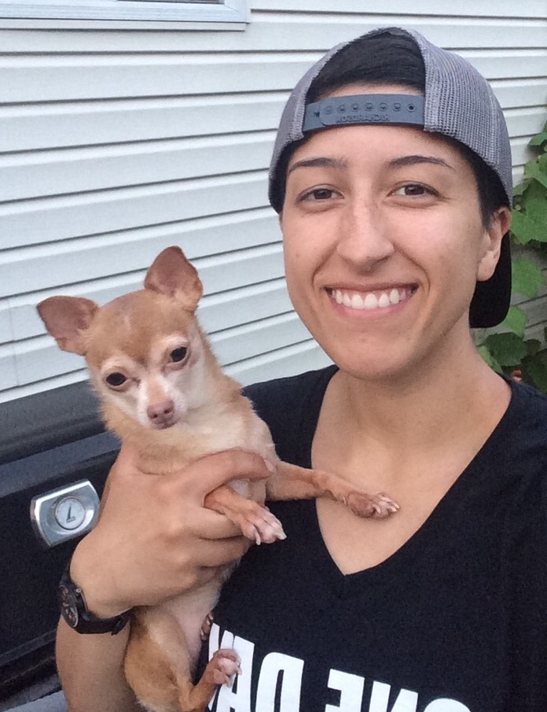

About Me

9 to 5 you'll find me at a computer investigating LGBTQ health disparities for research projects at Northwestern's ISGMH. After 5 you'll probaby find me at a different computer studying and practicing web development.
When I'm not doing any of the above or sleeping, I teach self-defense, make pottery, hit the gym, play videogames, and hang out with my little dog who is perfect in every way.
I studied Sociology at the University of Chicago, and my background is in direct service at non-profits focused on sexual and mental health education for adolescents.